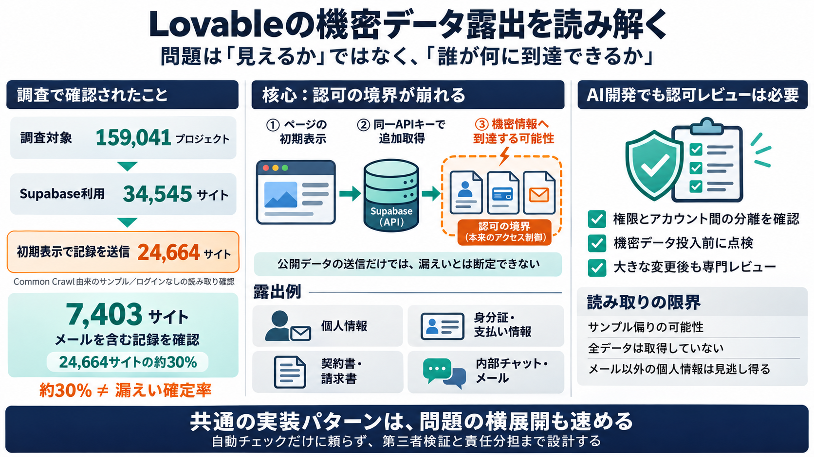

Was Supabase hacked? No — why 16,326 databases were exposed
CVE-2025-48757 — the Lovable exposure (May 2025). The flagship case. Security researcher Matt Palmer analyzed a large sa…

Lovableプロジェクト 159,041
Supabase 34,545 / 159,041
24,664 サイト
即漏えい確定ではないが、
深掘りで問題化し得る
10,560テーブル中で
7,403 サイト
メールが無い個人データは見逃し得る
サンプル偏りの可能性（全数代表ではない）
全データセットではなく一部取得
権限（認可）／インタフェース／アカウント間の分離境界
リリース前だけでなく、変更後にも再点検（専門レビュー）
CVE-2025-48757 — the Lovable exposure (May 2025). The flagship case. Security researcher Matt Palmer analyzed a large sa…
Lovable puts sensitive stuff behind `VITE_` or `NEXT_PUBLIC_` prefixes, which means they get bundled into the browser Ja…
The root cause lies in the failure to enforce or maintain secure default RLS configurations for user projects. This can…
Attackers who only `curl` PostgREST ignore the Lovable share password entirely. Enable leaked-password protection for re…
### TL;DR Smarter Debugging: Automatic reading of Supabase edge function logs for quick issue resolution. Customizabl…